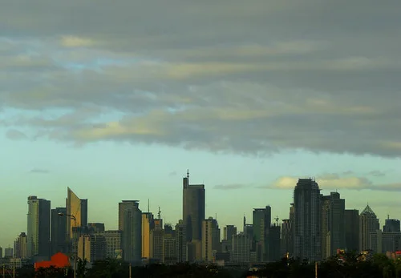
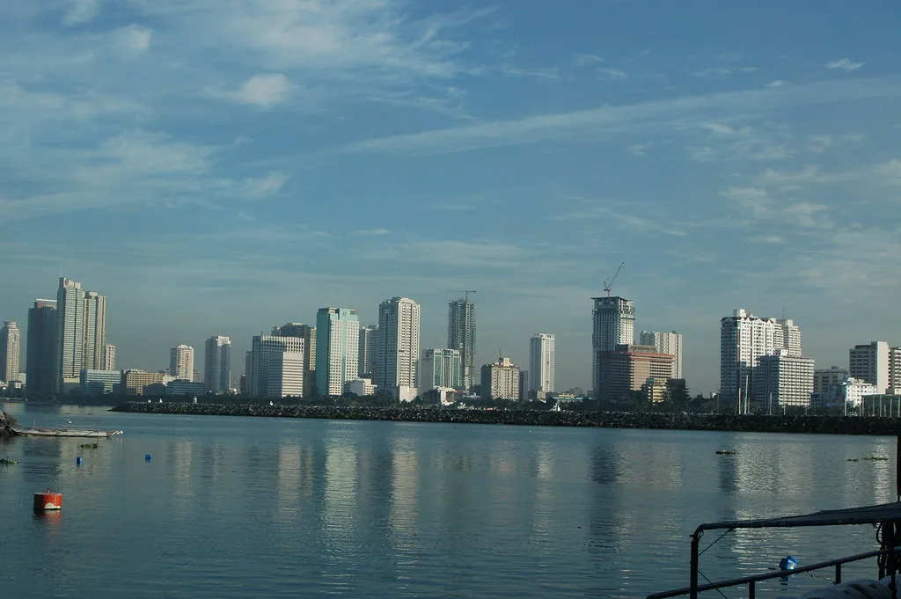

이재명 대통령이 다음 주 동남아시아와 중국을 잇는 다자 외교 일정에 나선다. 위성락 국가안보실장은 12일 브리핑에서 이 대통령이 16일부터 19일까지 필리핀 마닐라에서 열리는 아세안 관련 정상회의와 중국 선전에서 열리는 아시아태평양경제협력체(APEC) 정상회의에 잇따라 참석한다고 밝혔다. 나흘 동안 두 나라를 오가며 양자 회담과 다자 회의를 소화하는 빡빡한 일정이다.
첫 방문지는 마닐라다. 이 대통령은 16일 출국해 현지에서 태국 총리, 필리핀 대통령과 차례로 정상회담을 갖는다. 이튿날인 17일에는 아세안+3(한·중·일) 정상회의와 동아시아정상회의(EAS)에 참석한다. 아세안은 한국의 주요 교역·투자 상대인 동시에 공급망 다변화의 핵심 지역으로 꼽히는 만큼, 경제 협력과 지역 안보 현안이 두루 다뤄질 것으로 예상된다.

대통령실은 이번 아세안 일정에서 한반도 평화에 대한 각국의 지지를 당부할 계획이라고 설명했다. 동아시아정상회의에는 역내 주요국 정상들이 함께 참석하는 만큼, 한반도 정세에 대한 한국 정부의 입장을 국제사회에 설명하는 자리가 될 전망이다. 아세안+3 정상회의는 한국과 중국, 일본이 아세안 회원국과 함께 금융·식량·보건 등 실무 협력을 논의해 온 협의체여서, 동북아 3국 정상이 한자리에 모인다는 점에서도 의미가 있다. 각국이 미중 경쟁과 보호무역 흐름 속에서 해법을 모색하는 시기인 만큼 역내 협력의 방향을 가늠할 기회로도 꼽힌다.
18일에는 중국 선전으로 이동한다. 이 대통령은 이날 APEC 최고경영자(CEO) 서밋에 참석하고, 시진핑 중국 국가주석 부부가 주최하는 환영 만찬에도 함께한다. 같은 날 현지 교민들과 오찬 간담회를 열어 동포 사회의 의견을 듣는 일정도 잡혀 있다. 이어 19일 오전 APEC 본회의에 참석한 뒤 귀국길에 오른다. 선전은 중국의 대표적인 첨단기술·제조 도시로, 전자와 통신, 전기차 관련 기업이 밀집해 있다. 이 때문에 CEO 서밋 등을 계기로 양국 기업 간 교류와 공급망 협력에 관한 논의가 오갈지도 관심사다.
APEC 본회의에서는 중동발 에너지 공급망 충격에 어떻게 대응할지, 흔들리는 다자무역 질서를 어떻게 회복할지가 주요 의제로 오를 예정이다. 에너지와 원자재 대부분을 수입에 의존하는 한국으로서는 공급망 안정이 경제와 직결된 문제여서, 회원국 간 협력 방안이 어떻게 정리될지 주목된다. 수출 비중이 높은 한국 경제 구조상 다자무역 질서 회복 논의 역시 놓칠 수 없는 대목이다.

이번 순방에서 가장 관심이 쏠리는 대목은 주요국과의 별도 정상회담 성사 여부다. 개최국 정상인 시진핑 주석과의 한중 정상회담 가능성이 거론되고, 미국 중간선거 이후 트럼프 대통령과의 한미 정상회담이 열릴지도 관전 포인트로 꼽힌다. 다만 대통령실이 공식적으로 확정해 발표한 양자 회담은 태국·필리핀 정상과의 회담이며, 나머지는 아직 가능성 차원에서 언급되는 단계다.
순방 기간 국내에서는 굵직한 정치 현안이 이어질 예정이어서, 대통령의 해외 일정과 국내 정국이 맞물려 돌아가는 한 주가 될 것으로 보인다. 정상외교 일정은 현지 사정에 따라 일부 조정될 수 있는 만큼, 구체적인 회담 결과는 순방이 진행되는 동안 차례로 공개될 전망이다.